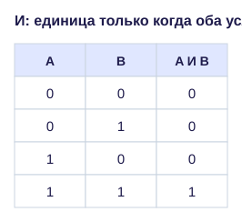
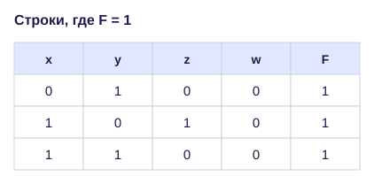

Ученик получает формулу. Буквы в ней равны 0 или 1. После урока он сам заполняет таблицу и видит, что писать в ответ.
Ответ бывает двух видов. Число: сколько строк дали 1. Или три буквы подряд: какой столбец какая буква, если подписи стёрты.
В уроке буквы A, B и C. На экзамене те же места иногда называют x, y и z. Если букв четыре, строк шестнадцать. Шаги те же.
Три действия и одна стрелка.



Для двух букв строк четыре. Для трёх букв строк восемь. Скобки считают первыми, потом НЕ, потом И, потом ИЛИ.
Стрелку можно переписать: A → B это то же самое, что ¬A ∨ B. На бумаге быстрее помнить одну ложную строку, чем переписывать формулу.
Дальше три приёма. Они про разные вопросы. Первый: буквы подписаны, надо число единиц. Второй: в показанных строках F везде 0 или везде 1. Третий: в фрагменте F разная, буквы столбцов надо восстановить.
Это обычный случай. Формула дана, столбцы подписаны A, B и C. Спрашивают одно число: сколько строк, где F равно 1.
Ученик выписывает все восемь комбинаций. В каждой считает формулу. Потом считает единицы. На картинке столбец F пустой: его заполняют сами.
Пример. (A ∨ B) ∧ ¬C.

| A | B | C | F |
|---|---|---|---|
| 0 | 0 | 0 | 0 |
| 0 | 0 | 1 | 0 |
| 0 | 1 | 0 | 1 |
| 0 | 1 | 1 | 0 |
| 1 | 0 | 0 | 1 |
| 1 | 0 | 1 | 0 |
| 1 | 1 | 0 | 1 |
| 1 | 1 | 1 | 0 |
Единиц в столбце F: 3.
Ответ: 3.
В конце урока есть программа. Она печатает то же число. В вопросах столбец F снова пустой, считают так же.
Нажмите «В интерпретатор» под кодом. Программу можно менять и запускать заново.
def F(A, B, C):
return 1 if ((A or B) and not C) else 0
count = 0
for A in (0, 1):
for B in (0, 1):
for C in (0, 1):
if F(A, B, C):
count += 1
print(count)Здесь не просят пересчитать всю таблицу. Дают несколько строк, и F в них одинаковая: либо везде 1, либо везде 0. Это другой приём. Ноль и единица подсказывают разное. Если их перепутать, столбец назовут не той буквой.
Сначала смотрят, какое действие стоит снаружи.
Пример, где везде F = 1. Формула A ∧ (B ∨ ¬C). Показаны все строки, где результат равен 1. Других единиц у формулы нет. Столбцы буквами не подписаны. В ответе три буквы подряд, слева направо.

| столбец 1 | столбец 2 | столбец 3 | F |
|---|---|---|---|
| 0 | 0 | 1 | 1 |
| 0 | 1 | 1 | 1 |
| 1 | 1 | 1 | 1 |
Ответ: cba.
Почему строка с F = 0 решается иначе. У этой же формулы ноль получается по разным причинам. Общего столбца из нулей нет, и буква сама не называется.
| A | B | C | почему F = 0 |
|---|---|---|---|
| 0 | 1 | 1 | A равен 0, И уже даёт 0 |
| 1 | 0 | 1 | A равен 1, но B ∨ ¬C даёт 0 |
В первой строке И даёт 0 из-за A. Во второй A уже 1, а ноль даёт скобка. При F = 0 шаг «вот столбец из нулей, это и есть A» не работает: такого столбца нет. Сначала смотрят, И снаружи или ИЛИ, и только потом пробуют порядок букв.
Стрелка — тот же узкий ноль. A → B даёт 0 только когда A = 1 и B = 0. В остальных трёх своих строках стрелка даёт 1. Вопросы этого урока как раз со стрелкой: буквы уже подписаны, просят число единиц.
Пример к вопросам. (A → B) ∧ C. Сколько строк, где F равно 1?

| A | B | C | F |
|---|---|---|---|
| 0 | 0 | 0 | 0 |
| 0 | 0 | 1 | 1 |
| 0 | 1 | 0 | 0 |
| 0 | 1 | 1 | 1 |
| 1 | 0 | 0 | 0 |
| 1 | 0 | 1 | 0 |
| 1 | 1 | 0 | 0 |
| 1 | 1 | 1 | 1 |
Единиц в столбце F: 3.
Ответ: 3.
В вопросах ниже буквы подписаны. В формуле есть стрелка. Нужно число, как в этом примере. Программа в конце урока печатает его. Буквы фрагмента, как cba выше, перебирает программа следующего приёма.
Нажмите «В интерпретатор» под кодом. Программу можно менять и запускать заново.
def F(A, B, C):
return 1 if ((((not A) or B)) and C) else 0
count = 0
for A in (0, 1):
for B in (0, 1):
for C in (0, 1):
if F(A, B, C):
count += 1
print(count)Снова дают не всю таблицу, а несколько строк. Столбцы подписаны номерами. F в этих строках разная: где-то 0, где-то 1. Букву ищут подстановкой. Столбец из нулей сам букву не выдаёт: эти нули могли просто попасть в выбранные строки.
Ученик подставляет порядок букв и проверяет каждую строку фрагмента. Подходит один порядок. Его пишут тремя буквами подряд, слева направо, без пробела.
Пример. (A ∧ ¬B) ∨ C. Столбцы на рисунке.

Ответ: acb.
Дальше картинка над вопросом. Разбор откроется после ответа. Программа в конце урока перебирает шесть порядков и печатает подходящий.
Нажмите «В интерпретатор» под кодом. Программу можно менять и запускать заново.
import itertools
def F(A, B, C):
return 1 if ((A and not B) or C) else 0
fragment = [
((0, 0, 0), 0),
((0, 0, 1), 0),
((0, 1, 1), 1)
]
good = []
for perm in itertools.permutations("ABC"):
ok = True
for shown, value in fragment:
env = dict(zip(perm, shown))
if F(env["A"], env["B"], env["C"]) != value:
ok = False
break
if ok:
good.append("".join(perm).lower())
print(good[0])